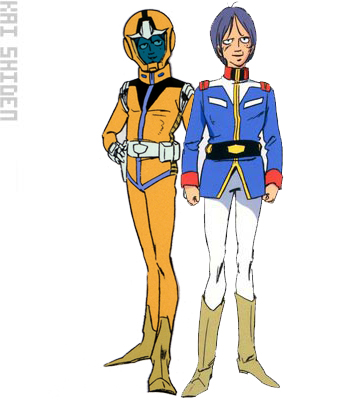
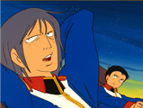
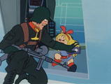
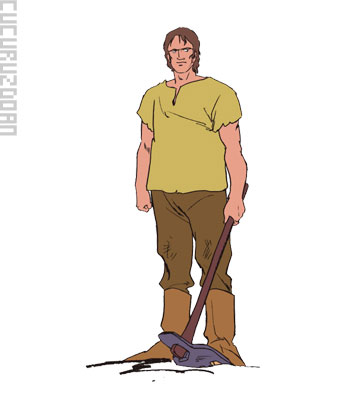
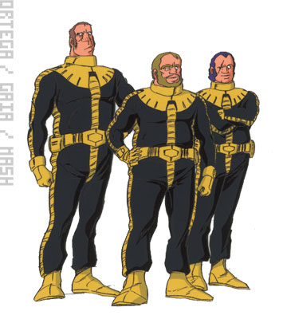

联邦军
アムロ·レイ
サイド７に住む機械いじりの好きな内向的な少年。
偶然手に入れたマニュアルをもとにガンダムのメインパイロットとなる。
ジオン公国軍のシャアやランバ•ラルとの戦闘を通じ、戦いの厳しさを知り、ニュータイプへと覚醒していく。

カイ·シデン
サイド７に住む技術者の息子で、大型特殊車両の免許を保有していることから、ガンタンク、ガンキャノンのパイロットとして戦うことになる。


セイラ·マス
ホワイトベースの通信担当で後にパイロットとなる。
ジオン•ズム•ダイクンの長女として生まれたアルテイシアだが、父の死後、兄キャスバルと共にジンバ•ラルの手によって地球に逃れ、セイラ•マスの名で隠 れ育てられる。看護•学生としてサイド７に住んでいたが、ジオン軍の襲撃によりホワイトベースに逃げ込み、以後通信担当のクルーとなる。ジオン軍のシャア の正体が生き別れの兄•キャスバルと知り、戦場での兄との遭遇が彼女の中に様々な葛藤を生む。

ハヤト·コバヤシ
ガンタンク、ガンキャノンのパイロット。特技は柔道。
サイド７でアムロの向かいに住んでいたが、テムの仕事で立ち退きさせられ、移住環境が替わった事もありアムロとは親しくない。ホワイトベースに逃げ込み、クルーとなった。協調性はあるが、アムロにかなわない事がコンプレックスとなっている。
ブライト·ノア
ホワイトベースの艦長。
士官候補生としてホワイトベースに乗り込んでいたが、正規の軍人が次々と倒れる中、やむなく素人だらけの艦の指揮官となる。
フラウ·ボゥ
アムロのガールフレンド。
ホワイトベースの医療や生活の面を担当した。
サイド７で一人暮らしの多いアムロの世話を焼いていたが、ジオン軍の襲撃で家族を失い、ホワイトベースに逃げ込んだ。
同じ境遇の３人の子供達を、お姉さん役として面倒をみている。
セイラがパイロットに転向後は、通信担当を一手に受け持つ。
アムロが成長していくのを好ましく思う反面、ニュータイプへと覚醒していくことで自分と疎遠になっていく寂しさも感じていた。
ジャブローにおいて正式に上等兵として任官された。

ミライ·ヤシマ
ホワイトベースの操舵手を努める。
地球連邦政府元高官の令嬢。
父親の死後に移住したサイド７で戦禍に巻き込まれ、ホワイトベースに逃げ込む。
クルーザー級スペースグライダーのライセンスをもっていたため、操舵手に志願した。
洞察力に優れる少女で、経験を積みベテラン操舵手以上の操艦で、ホワイトベースの数々の危機を救う。
ブライトから信用されており、度々意見を求められる。
ジャブローにおいて正式に少尉に任官された。
リュウ·ホセイ
ガンタンクのメインパイロットで少年たちのリーダー的存在でもある。
ホワイトベース正規のクルーの中で唯一生き残ったパイロット候補生だったが、実戦経験は皆無に等しかった。
ブライトと反対におおらかな性格であり、人間関係についてよく相談を受けていた。
人望があり、素人戦闘員をまとめる技量はブライト以上。
ランバ•ラル隊との白兵戦で負傷。アムロのガンダムをまもる為、コアファイターでハモンのマゼラ•トップに体当たりし、戦死。
オムル·ハング
ホワイトベースのメカニックマンのひとり。
正規兵であり、メカニックマンの中心的な役割を果している。
ジオン軍の捕虜が脱走しエアロックに逃げ込んだ時には、ホワイトベースのクルーの安全の為、素早い状況判断で危機を脱した。
ワッケイン
ルナツーの司令官。
軍規に従い、ホワイトベースのクルーを軍事機密に触れたという罪状で一時拘留したが、のちにホワイトベースをジャブローへ回航させる。
ソロモン攻略戦ではマゼランに乗り先鋒隊の指揮をとった。
その後、テキサスコロニーにてシャアのザンジバルと交戦、撃沈され戦死。
ジョブ·ジョン
ホワイトベースの予備パイロット。主にガンタンクやガンペリーのサブパイロットにつく金髪の青年。甲板士官やメカニックの手伝いなどもこなす。
パオロ·カシアス
ホワイトベースの艦長。
サイド７を襲ったジオン軍を迎撃中にリュウをかばって負傷し、ルナツーへ逃げるようブライトに指示する。ルナツー脱出の際の戦闘中、力尽きて亡くなる。

ハロ
アムロがフラウにプレゼントした、ペットロボット。
球体のボディで転がって移動するが、収納された手足を使って階段の昇降もできる。簡単な会話や脳波レベル測定も可能。
ホワイトベース内ではキッカたちのペットにされていた。
マチルダ·アジャン
レビル将軍の直命でホワイトベースの補給とメンテナンスを行う補給隊の指揮官。
ウッディ大尉の婚約者でもある。
ミデア輸送機で、ホワイトベースへの補給と連絡を行っていたが、ドムの攻撃からホワイトベースを守ろうと突撃し、ガンダムを庇う形で戦死する。
スレッガー·ロウ
リュウの補充要員としてジャブローでホワイトベースに配属されたパイロット。
Gファイターのパイロットだが、主砲の砲撃手も出来る。
ブライトと階級は同じだが、ベテランの趣があるパイロット。
ソロモン攻略戦でＭＡビグ•ザムのビーム•バリアを突破して攻撃を掛けようとして突撃し、帰らぬ人となる。
ウッディ
ジャブローの宇宙船ドックの責任者。
入港したホワイトベースのオーバーホールと修理を担当した。またマチルダ中尉の婚約者でもある。
ホワイトベースを守るためにホバークラフト•ファンファンで出撃し、シャアのＭＳズゴックの攻撃により戦死した。
テム·レイ
アムロの父。ガンダムの開発者。
ガンダムを受けとるためサイド７に上陸していたが、ザクの爆発でコロニーに開いた穴から宇宙に飛ばされる。
宇宙を漂流後、サイド６に住み着くが、アムロと再会した時、その脳は酸素欠乏症に冒されていた。
カツ·ハウィン／レツ·コファン／キッカ·キタモト
サイド７難民の孤児３人組。
フラウ•ボウを慕って、ホワイトベースに居ついてしまう。
ジャブローではジムに仕掛けられた爆弾を見つけるなど大人顔向けの活躍もみせる。
レビル
地球連邦軍の実質的な最高指令官。オデッサ作戦を指揮。葉巻を愛好する。
ルウム戦役ではジオン軍の「黒い三連星」に捕虜にされた過去がある。
ホワイトベースの戦果に興味を持ち、民間人をそのまま登用し支援をおこなっていた。
ア•バオア•クー戦を指揮するため宇宙に上がったが、ジオン公国のデギン公王との和平会談直前、ジオンのソーラ•レイの攻撃によって戦死する。
吉翁军
シャア·アズナブル
地球連邦軍から「赤い彗星」の名で呼ばれ恐れられるジオンの将官。
実はジオン•ズム•ダイクンの長男でセイラの兄。
ドズル配下としてゲリラ掃討作戦より帰投中にホワイトベースを発見、サイド７にてガンダムと交戦、そのまま追撃の任務につく。

デニム
連邦軍のＭＳ施設偵察のため二人の部下とともにサイド７に潜入したザクのパイロット。
ジーン
デニムと共にサイド７に潜入したザクのパイロット。
功を焦って運搬途中のガンタンクやガンキャノンを破壊するが、ガンダムと交戦し破れる。
ガデム
補給艦パプアの艦長。
サイド７のシャアの補給に駆けつけた。艦を沈められ、旧ザクでガンダムに挑むが破れる。
クラウン
ザクのパイロット。
大気圏突入直前のホワイトベースに攻撃を仕掛けるが、回収のタイムリミットを越えてしまい、大気圏の摩擦熱でザクごと燃え尽きる。
ガルマ·ザビ
ザビ家の四男で末弟。地球方面軍司令。
シャアの友人。士官学校時代からの友人であるシャアよりホワイトベース追撃を引き継ぎ善戦する。
前ニューヤーク市長の娘イセリナと愛し合う。
若くして要職についたことを「親の七光」と思われるのを嫌い、自ら戦闘機•ドップを駆り、前線で戦って実力を示そうとするが、最後にはシャアの復讐の餌食となった。
ランバ·ラル
ガルマの仇討ち部隊の隊長。
ゲリラ戦のスペシャリスト。
ジオン•ダイクンの側近であったジンバ•ラルの息子であり、幼少の頃のセイラと面識がある。
どんな逆境にも負けず、ひたすら任務遂行の方法を模索する軍人。
自らグフを駆って前線に赴き、部下からの人望も厚い。
グフを失い、ホワイトベースに白兵戦を仕掛けるが、艦内でセイラと遭遇した後、重傷を負い、アムロの目前で爆弾により自決する。
クラウレ·ハモン
ランバ•ラルと行動を共にする女性。
優秀な人材であり兵達の人望も厚い。
ランバ•ラルが出撃した際の後方支援の指揮をとる。
ソドンの町で出会ったアムロを好ましく思いながらも、手ごわい敵として認めている。
ランバ•ラルを尊敬し愛しており、彼の死後、残った部下達と共に仇討ち戦を仕掛ける。その悲願達成の寸前、リュウのコア•ファイターの体当たりを受けて死亡。
コズン·グラハム
ランバ•ラル隊のザクのパイロット。
セイラの乗るガンダムを捕獲しようとして失敗し、ホワイトベースの捕虜になる。
隠し持っていた爆薬で牢を破って脱走。本隊にホワイトベースの戦力についての情報を送信後、パーソナルジェットで脱出しようとするが、バズーカの爆風に吹き飛ばされ、墜落死する。
クランプ
ランバ•ラルの副官。
ゲリラ戦のスペシャリスト。
ホワイトベースに突入する際にブリッジに爆薬を仕掛けようとして、窓越しにキッカと遭遇、軍艦に子供が乗艦している事実に驚愕する。
開いたハッチから突入しようとしたが、マシンガンで反撃を受け、戦死する。


ククルス·ドアン
孤島に４人の子供達と暮らしている、元ザクのパイロット。
作戦中に住民を誤って殺してしまい、子供達も殺せという命令を拒否して、彼等を連れて軍を脱走した。現在も脱走兵としてジオンの追討を受けている。

ガイア
黒い三連星のリーダー。
猛者だが、戦友の死を悼んで弔砲を撃つ一面もある。
ガンダムとの第１戦では、２回目に仕掛けたジェット•ストリーム•アタックでドムを踏み台にされ善戦むなしく、ガンダムの前に破れる。
オルテガ
黒い三連星の一人。
ジェット•ストリーム•アタックでは真ん中や最後尾に位置する。Ｇスカイ•イージーに乗ったガンダムにドムを切り裂かれて戦死。
マッシュ
黒い三連星の一人で隻眼の兵士。
ジェット•ストリーム•アタックの最中にガンダムにコクピットを貫かれる。
マ·クベ
キシリアの部下で陶磁器蒐集が趣味。
連邦軍のオデッサ作戦で撤退するまでは、地球上の鉱物資源の採掘を任務としていた。
策士のタイプであるが、駆け引きの道具として「核兵器」を持ち出すことさえも厭わず、またその使用にためらうこともない。
宇宙に戻った後は、ソロモン救援艦隊を指揮し、ゼナを救出した。
テキサスコロニーではギャンでガンダムに挑むが、破れ去る。
ウラガン
マ•クベ付きの士官で、ランバ•ラルとの連絡係などを務める。
ミハル·ラトキエ
生活のために情報を売って生計をたてているジオン軍のスパイ。
ベルファストに弟と妹を残し、ホワイトベースに潜入するが、親身になってくれるカイに対して心を開き、ジオン軍に利用されるだけの人生を変えようと、カイと共にガンペリーで出撃する。
ミサイル発射の際、大西洋上空に吹き飛ばされ戦死。
ドズル·ザビ
ザビ家の次男。
ジオン軍宇宙攻撃軍司令。顔中傷だらけの巨漢。
兄のギレンや姉のキシリアと違い、常に兵達を気遣う愚直な武人タイプで、多くの部下に慕われている。また、家族を非常に大事にしている。
弟ガルマの仇討ち部隊としてランバ•ラル隊を派遣した。
ソロモン攻略戦では、形勢不利とみるや兵達にソロモン脱出を指示、自らＭＡビグ•ザムに乗り込み、連邦軍の主力へ特攻をかける。
コンスコン
シャアの無能さを証明しようと、ドズルが派遣したチベ艦隊の司令官。
ホワイトベースを落とそうと１２機のリック•ドムを出撃させるが、あっという間に全滅させられガンダムに沈められる。
マリガン
マッド•アングラーに配属されたシャアの副官。
キシリアと通じている部分があり、シャアには信頼されていない。
ドレン
シャアの副官であったが大尉に昇格しキャメル艦隊の司令となる。
その後シャアの要請により宇宙に出たホワイトベースの頭を抑えるべく艦隊戦を仕掛けるが、逆にガンダムに艦隊を壊滅させられる。
デギン·ソド·ザビ
ジオン公国の初代公王であり、最高権力者。
ジオン•ダイクンの側近の一人であった。死の床の彼に、共和国2代目首相を指名されたと言われている。
コロニーの独立主権を目指したジオンの主張を「宇宙移民はエリートなので、地球に従う必要はない」とすり替え、連邦に対して独立戦争を仕掛けた。
レビル将軍に和平交渉を申し入れるが、会談中にギレンが発射させたソーラ•レイによって殺される。
ギレン·ザビ
ザビ家長男。ジオン公国軍総帥。
野心家であり、目的のためには手段を選ばず、弟の葬儀すら戦意高揚のために利用した。
ソーラ•レイの射線上に連邦軍主力艦隊だけでなく、父デギンがいることを知りながら発射を指示、父を殺害する。
キシリア·ザビ
ザビ家の長女。
ジオン軍突撃機動軍司令。弟ガルマの直接の上司でもある。弟ドズルが罷免したシャアを拾うなど合理主義者であり、フラナガン機関を支援したりする先見の明もある。体面を重んじる軍人よりは政治家に近いタイプ。
ア•バオア•クー戦では父デギン謀殺を知り、兄ギレンを殺害。
戦況不利と見るや戦艦ザンジバルで脱出を図るが、シャアによって射殺された。
ララァ·スン
孤児だったところをシャアに拾われ、フラナガン機関に育てられたニュータイプの少女。卓越したニュータイプ能力により、エルメス搭乗時はベテランパイロットをも凌ぐ力を発揮した。
シャアに対して恩義とも愛情ともつかない感情を抱いていたが、サイド6でアムロと出会ったことで、同じ力を持つもの同士としてアムロに惹かれていく。
シャアの危機にその身を挺してアムロのビーム•サーベルに貫かれ、戦死した。
シャリア·ブル
MAブラウ•ブロのパイロット。
潜在的なニュータイプ能力を見込まれ、ギレンからキシリアのもとへ派遣された。
ブラウ•ブロでガンダムに挑むが破れる。